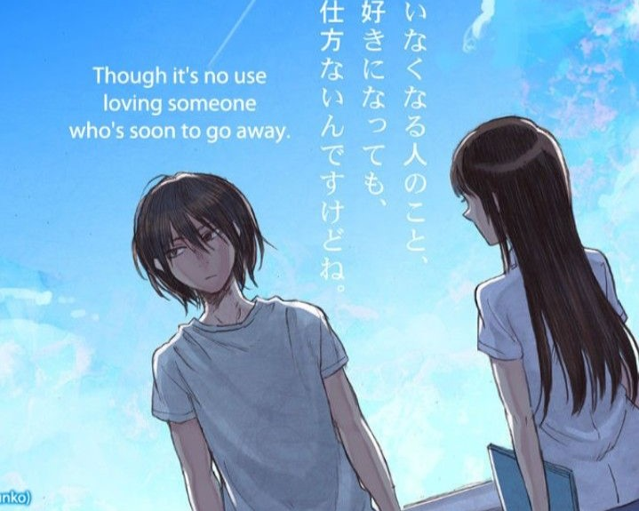

Mark L. Dela Cruz
Three Days of Happiness Manga Review
“Would you sell your lifespan if you knew you wouldn’t do anything important with it?”
That is what the protagonist of Sugaru Miaki’s Three Days of Happiness or I sold my life for ten thousand yen per year, accomplishes. A 20-year-old broke college student named Kusunoki finds out about a store that trades in time, health, and lifespans. Kusunoki chooses to investigate this enigmatic shop after selling the last of his joy-inducing belongings in order to pay for food and lodging. Kusunoki always thought he was destined to be somebody significant. In light of this, he estimates that if he sells 30 of the 60 years, he believes he has left to live, he should receive a sizeable quantity of money..
Kusunoki learns to his dismay that he has only 30 more years to live, and in those years, he has a wretched existence, making each year worth 10,000 yen, or roughly 4000 pesos, in today’s money. Kusunoki makes the decision to sell the remaining years minus three months after learning how little his life is worth. He is given a monitor he can only see to keep an eye on him because he has less than a year left and must be careful not to harm anyone. Up until his last three days of life, when he gets to live alone in privacy, his monitor will stay with him.
